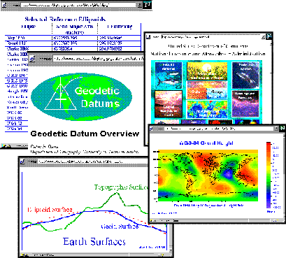

Figure 4. These Web pages are part of the lecture notes on Geodetic Datums developed for the Geographer's Craft Project by Peter Dana. Geodetic Datums is one of the fourteen modules that comprise the project's electronic textbook.

Return to the Visitor's Information page.